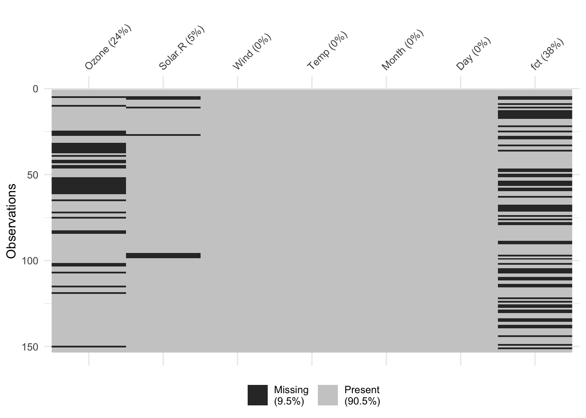

library('available')
# help(package = 'available')
options(available.browse = FALSE)
available('merge', )
available('track')
available('trackChanges')
available('trackR')
available('collab')
available('writeTogether')Interesting R packages
Short notes about R packages
- Flow charts in R: ggflowchart
- Web scraping: rvest
- Spatial data / maps: Recommendations from Nicola Rennie’s blog
Check package names
R packages built from a single *.RMD file
Interfaces to computer algebra systems in R
Herre, I have collected a few resources in the field of computer algebra systems that have an interface to R.
General
- CRAN task view: Section “Multi-Precision Arithmetic and Symbolic Mathematics” on this site
- Blog article
Maxima
system('export PATH=${PATH}:/Applications/Maxima.app/Contents/Resources/opt/bin')
system('echo $PATH')
help(package='rim')library(rim)Maxima successfully registered as knitr engine!rim::maxima.isInstalled()[1] TRUErim::maxima.get("1+1;")(%o1) 2(%i1) lambda_S: beta * psi;(%o1) beta*psi(%i2) Lambda_S: integrate(lambda_S, t);(%o2) beta*psi*t(%i3) S_S: exp(-Lambda_S);(%o3) %e^-(beta*psi*t)(%i4) assume(beta > 0);(%o4) [beta > 0](%i5) assume(psi > 0);(%o5) [psi > 0](%i6) E_S: integrate(S_S, t, 0, inf);(%o6) 1/(beta*psi)(%i7) tex(''E_S);(%o7) falseRyacas
library(Ryacas)
Attaching package: 'Ryacas'The following object is masked from 'package:stats':
integrateThe following objects are masked from 'package:base':
%*%, det, diag, diag<-, lower.tri, upper.trias_r(yac_str("Simplify(a*b*a^2/b-a^3)"))[1] 0yac_str('Simplify(x^2 + 2*(x-3)^3)')[1] "2*x^3-17*x^2+54*x-54"yac_str("TeXForm(x^2 - 1)")[1] "x ^{2} - 1"Flowcharts
Source: https://cran.r-project.org/web/packages/Gmisc/vignettes/Grid-based_flowcharts.html
library(Gmisc, quietly = TRUE)
library(glue)
library(htmlTable)
library(grid)
library(magrittr)
org_cohort <- boxGrob(glue("Stockholm population",
"n = {pop}",
pop = txtInt(1632798),
.sep = "\n"))
eligible <- boxGrob(glue("Eligible",
"n = {pop}",
pop = txtInt(10032),
.sep = "\n"))
included <- boxGrob(glue("Randomized",
"n = {incl}",
incl = txtInt(122),
.sep = "\n"))
grp_a <- boxGrob(glue("Treatment A",
"n = {recr}",
recr = txtInt(43),
.sep = "\n"))
grp_b <- boxGrob(glue("Treatment B",
"n = {recr}",
recr = txtInt(122 - 43 - 30),
.sep = "\n"))
excluded <- boxGrob(glue("Excluded (n = {tot}):",
" - not interested: {uninterested}",
" - contra-indicated: {contra}",
tot = 30,
uninterested = 12,
contra = 30 - 12,
.sep = "\n"),
just = "left")
grid.newpage()
vert <- spreadVertical(org_cohort,
eligible = eligible,
included = included,
grps = grp_a)
grps <- alignVertical(reference = vert$grps,
grp_a, grp_b) %>%
spreadHorizontal()
vert$grps <- NULL
excluded <- moveBox(excluded,
x = .8,
y = coords(vert$included)$top + distance(vert$eligible, vert$included, half = TRUE, center = FALSE))
for (i in 1:(length(vert) - 1)) {
connectGrob(vert[[i]], vert[[i + 1]], type = "vert") %>%
print
}
connectGrob(vert$included, grps[[1]], type = "N")
connectGrob(vert$included, grps[[2]], type = "N")
connectGrob(vert$eligible, excluded, type = "L")
# Print boxes
vert
grps
excluded
Leaflet for maps
Here for finding the path to the project directory
Package for formatting labels in ggplot
Concattenating text
Handle missing data
- Package nania - getting started
- However, there seem to be no methods for categorical data… → Opened issue
library('naniar')
library('tidyverse')── Attaching core tidyverse packages ──────────────────────── tidyverse 2.0.0 ──
✔ dplyr 1.1.2 ✔ readr 2.1.4
✔ forcats 1.0.0 ✔ stringr 1.5.0
✔ ggplot2 3.4.2 ✔ tibble 3.2.1
✔ lubridate 1.9.2 ✔ tidyr 1.3.0
✔ purrr 1.0.1
── Conflicts ────────────────────────────────────────── tidyverse_conflicts() ──
✖ tidyr::extract() masks magrittr::extract()
✖ dplyr::filter() masks stats::filter()
✖ dplyr::lag() masks stats::lag()
✖ purrr::set_names() masks magrittr::set_names()
✖ purrr::simplify() masks Ryacas::simplify()
ℹ Use the conflicted package (<http://conflicted.r-lib.org/>) to force all conflicts to become errorslibrary('simputation')
Attaching package: 'simputation'
The following object is masked from 'package:naniar':
impute_medianaq <- airquality |>
mutate(Ozone = as.double(Ozone),
fct = sample(c('a', 'b', NA), replace = TRUE, size = nrow(airquality)))
colSums(is.na(aq)) Ozone Solar.R Wind Temp Month Day fct
37 7 0 0 0 0 57 vis_miss(aq)
aq_nabular <- nabular(aq)
aq_nabular# A tibble: 153 × 14
Ozone Solar.R Wind Temp Month Day fct Ozone_NA Solar.R_NA Wind_NA
<dbl> <int> <dbl> <int> <int> <int> <chr> <fct> <fct> <fct>
1 41 190 7.4 67 5 1 <NA> !NA !NA !NA
2 36 118 8 72 5 2 <NA> !NA !NA !NA
3 12 149 12.6 74 5 3 b !NA !NA !NA
4 18 313 11.5 62 5 4 <NA> !NA !NA !NA
5 NA NA 14.3 56 5 5 b NA NA !NA
6 28 NA 14.9 66 5 6 b !NA NA !NA
7 23 299 8.6 65 5 7 <NA> !NA !NA !NA
8 19 99 13.8 59 5 8 a !NA !NA !NA
9 8 19 20.1 61 5 9 <NA> !NA !NA !NA
10 NA 194 8.6 69 5 10 a NA !NA !NA
# ℹ 143 more rows
# ℹ 4 more variables: Temp_NA <fct>, Month_NA <fct>, Day_NA <fct>, fct_NA <fct>aq_nabular |> impute_lm(Ozone ~ Temp)# A tibble: 153 × 14
Ozone Solar.R Wind Temp Month Day fct Ozone_NA Solar.R_NA Wind_NA
* <dbl> <int> <dbl> <int> <int> <int> <chr> <fct> <fct> <fct>
1 41 190 7.4 67 5 1 <NA> !NA !NA !NA
2 36 118 8 72 5 2 <NA> !NA !NA !NA
3 12 149 12.6 74 5 3 b !NA !NA !NA
4 18 313 11.5 62 5 4 <NA> !NA !NA !NA
5 -11.0 NA 14.3 56 5 5 b NA NA !NA
6 28 NA 14.9 66 5 6 b !NA NA !NA
7 23 299 8.6 65 5 7 <NA> !NA !NA !NA
8 19 99 13.8 59 5 8 a !NA !NA !NA
9 8 19 20.1 61 5 9 <NA> !NA !NA !NA
10 20.6 194 8.6 69 5 10 a NA !NA !NA
# ℹ 143 more rows
# ℹ 4 more variables: Temp_NA <fct>, Month_NA <fct>, Day_NA <fct>, fct_NA <fct>